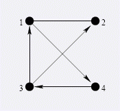
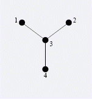

Byteotia城市有n个 towns m条双向roads. 每条 road 连接 两个不同的 towns ,没有重复的road. 你要把其中一些road变成单向边使得：每个town都有且只有一个入度
第一行输入n m.1 <= n<= 100000,1 <= m <= 200000 下面M行用于描述M条边.
TAK或者NIE 常做POI的同学,应该知道这两个单词的了...
4 5 1 2 2 3 1 3 3 4 1 4 
TAK  上图给出了一种连接方式.